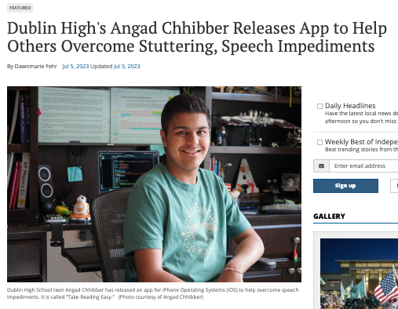

Take it Easy: Own the Pace
An application designed to help users overcome stutters and speech impediments by providing a controlled, paced reading experience.
Why I Built This
A Personal Journey
Ever since I was young, I've had a mild stutter. Over time, I've learned to control it, and the most important thing for me to remember is to speak slowly. However, school and society often pressure us to do everything fast: read fast, write fast, think fast. This pressure often caused me to speak too quickly.
When I looked for tools to help, all I found were apps designed to make people read faster. I realized there was a need for the opposite—a tool to help people slow down. So, I created "Take it Easy" for myself and for anyone else who wants to take things at their own pace.
The Solution
"Take it Easy" is a speech-driven slow reading program. It takes a piece of text and displays it word by word, pausing after each word is shown. This simple but effective mechanism forces the user to read at a deliberate, controlled pace, which can be immensely helpful in managing stutters and improving speech fluency.
Featured in the News
The project was featured by the Independent News for its innovative approach to helping people with speech impediments.
Available on All Platforms
iOS App
A fully native app available on the Apple App Store. It pauses based on the number of syllables in each word.
View on App StoreWeb Interface
A browser-based version that provides the core functionality on any device with a web browser.
Launch Web AppPython Script
An advanced version using Google Speech-to-Text that listens for the user to speak the word before proceeding.
View on GitHub